Standard operating procedure SOP-03Cryo focused ion beam · dual beam FIB-SEM
Cryo lamella for cryo-ET
Mill a window ~200 nm thin through a frozen cell on its grid, for cryo-electron tomography: cryo stage, sputter coat, cold GIS platinum, a grazing milling angle, relief cuts, milling passes and a final coat, with gallium or plasma ions.
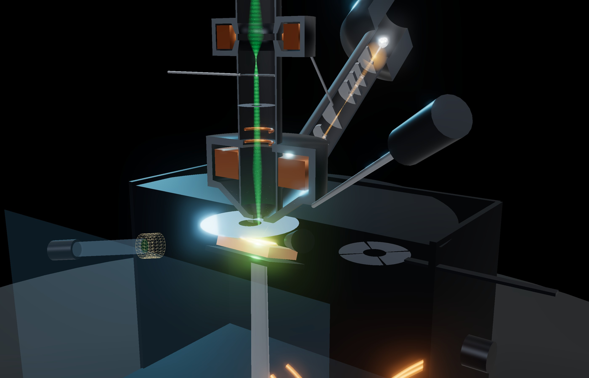
SOP-03, version 1.0, October 2026 For trainees on a cryo dual-beam FIB-SEM, practising in FIB-view Simulation only: figures and numbers are computed by FIB-view
Sculpting with IonsFIB-view · Advanced-EM
SOP-03 Cryo lamella for cryo-ETScope and overview
Scope and overview
Cryo-electron tomography images proteins in their place inside cells, but only through ice thinner than ~300 nm. Cells are 3–10 µm thick, so the FIB mills a frozen cell from above and below at a grazing angle and leaves a lamella ~200 nm thick across it, still on the grid. No lift-out is needed. Everything happens below −137 °C, where water stays glassy (vitreous).
Step
Setting (Ga⁺, 30 kV)
Current
Time
1
Load the grid, cool, find the cells
stage −190 °C, anticontaminator in
imaging only
—
2
Sputter coat
15 s Pt target, ~7.5 nm
—
9 min
3
Cold GIS Pt
20 s, valve open, beams off: ~0.9 µm
—
4
Milling angle
12° (stage tilt 19°)
—
5
Micro-expansion joints
two slits beside the site
—
6
Rough milling
both boxes to 2.5 µm
800 pA
9.5 min
7
Fine milling and polishing
to 800, 400 and 200 nm
300 → 100 → 25 pA
48 min
8
Final sputter coat, unload
15 s Pt
—
1 min
Instrument time for one lamella through a 5.2 µm clump of yeast cells, computed by FIB-view: about 68 min with gallium, 50 min with xenon, 93 min with argon. On a real instrument add navigation, imaging and drift checks, and run several lamellae per grid.
Terms used
Vitreous ice: water frozen so fast (≈10⁵ K/s) that it is a glass. Above ≈ −137 °C it devitrifies into crystalline ice, which pushes proteins aside and diffracts in the TEM.
Milling angle: the angle between the ion beam and the grid. On a 45° pre-tilted shuttle it is the stage tilt − 7°.
t/λ: thickness over the inelastic mean free path of 300 kV electrons in ice (≈350 nm). 0.4–0.7 is good for tomography.
Rules
Keep the stage below −170 °C and the anticontaminator in, from loading to unloading.
Image ice with electrons at 2–3 kV and low current; with ions only briefly, at 10–30 pA.
Step the current down with the thickness: below about half the thickness in nm, in pA.
Polish last and fast, then coat and unload: contamination grows on the fresh faces.
Caution. Liquid nitrogen and cryogens burn and displace oxygen. On a real instrument, follow your facility's cryo safety rules and the manufacturer's documentation.
Sculpting with Ions · FIB-view2
SOP-03 Cryo lamella for cryo-ETStep 1 of 8
Step 1
Load, cool and find the cells
Cool the stage and the anticontaminator before loading. The grid, clipped into a rigid ring, comes from the transfer station under vacuum or dry nitrogen: never through humid air.
In FIB-view open Cryo lamella (key \). The Frozen cells specimen loads on the cryo shuttle at −190 °C: yeast cells in vitreous ice on a holey carbon film on a gold grid.
Set the eucentric height (as in SOP-01, step 1).
Image with electrons at 2–3 kV, 25 pA. Look for a clump of cells near the centre of a grid square, away from the grid bars and from cracks in the ice, with ice thin around it.
A brief ion image (Fig. 1) shows the cells as mounds. Small bright crystals on the surface are frost picked up during transfer: avoid sites under them.
Result. A clump of cells at eucentric height, centred in both beams.
Note. Vitreous ice and frozen cells mill several times faster than silicon (Table 1), and charge above ~1.6 kV: keep the SEM low until the grid is coated.
Table 1. Milling rate with Ga⁺ at 30 kV, normal incidence
Material
µm³/nC
vs silicon
Vitreous ice
1.16
4.6×
Lipid droplets
0.95
3.8×
Vitrified cytoplasm
0.90
3.6×
Silicon (reference)
0.25
1×
Cold GIS Pt (organometallic)
0.11
0.44×
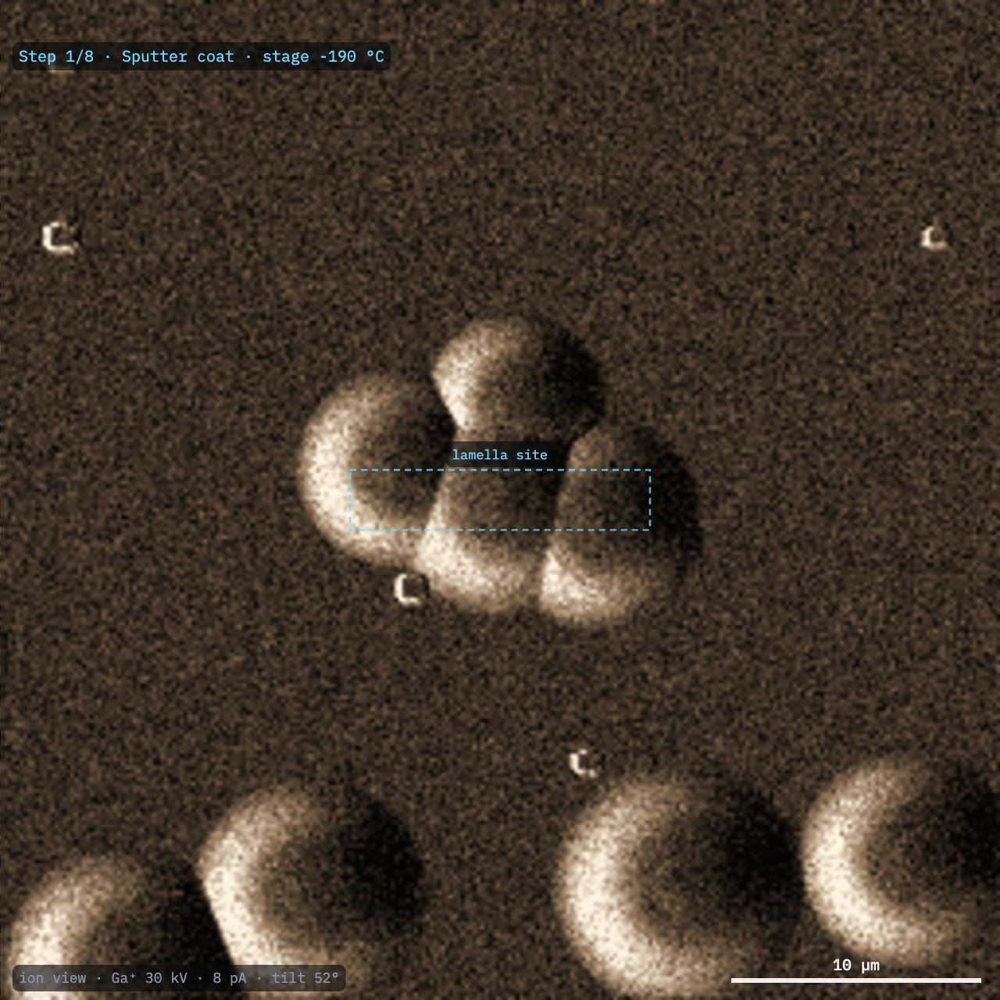
Fig. 1. Ion image (Ga⁺ 30 kV, 8 pA, 52°) of a clump of yeast cells in vitreous ice. The dashed box is the lamella site. The small bright crystals are frost.
Sculpting with Ions · FIB-view3
SOP-03 Cryo lamella for cryo-ETSteps 2 and 3 of 8
Steps 2 and 3
Sputter coat, then cold platinum
Sputter coat
Move the stage under the in-chamber Pt sputter target. Sputter for ~15 s (about 7.5 nm). In FIB-view: Run next step.
Check the SEM image at 3 kV: charging (Fig. 2, dark bands, drifting edges) is gone (Fig. 3).
Cold GIS platinum
Insert the GIS needle at its cryo position with both beams off, and open the valve for ~20 s. The precursor condenses on the cold grid as an organometallic layer (~0.9 µm), without being decomposed.
Retract the needle. Optionally sputter again to make the layer conductive.
Why. The organometallic layer mills ten times slower than ice (Table 1) and protects the front edge of the lamella from the beam's tails. Too thin a layer is used up during milling and leaves curtains down the faces. On a warm stage (above −150 °C) little of it condenses.
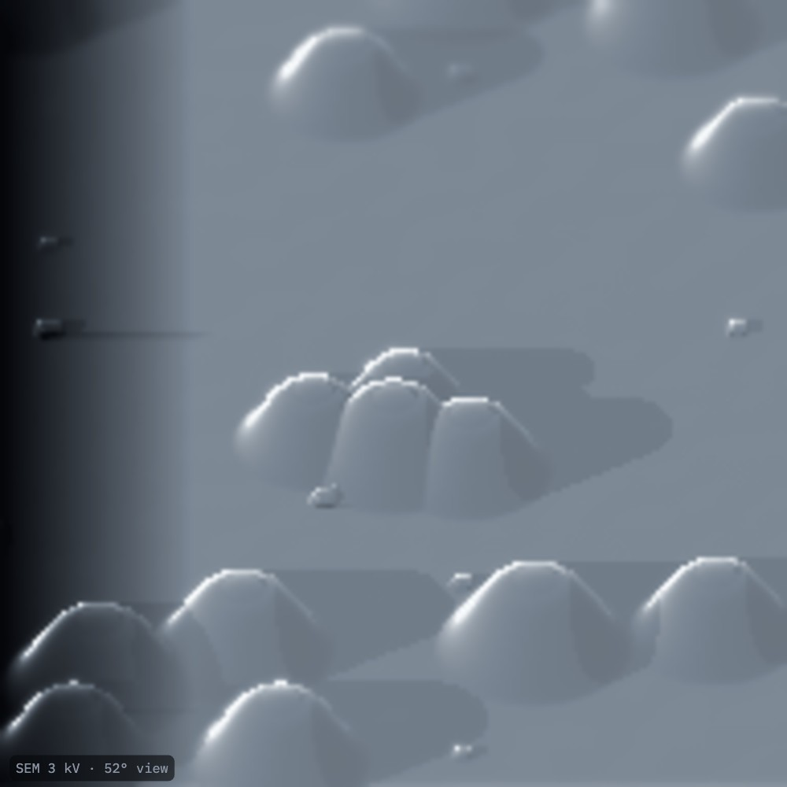
Fig. 2. SEM at 3 kV, 52°, uncoated: the ice charges (dark band, left).
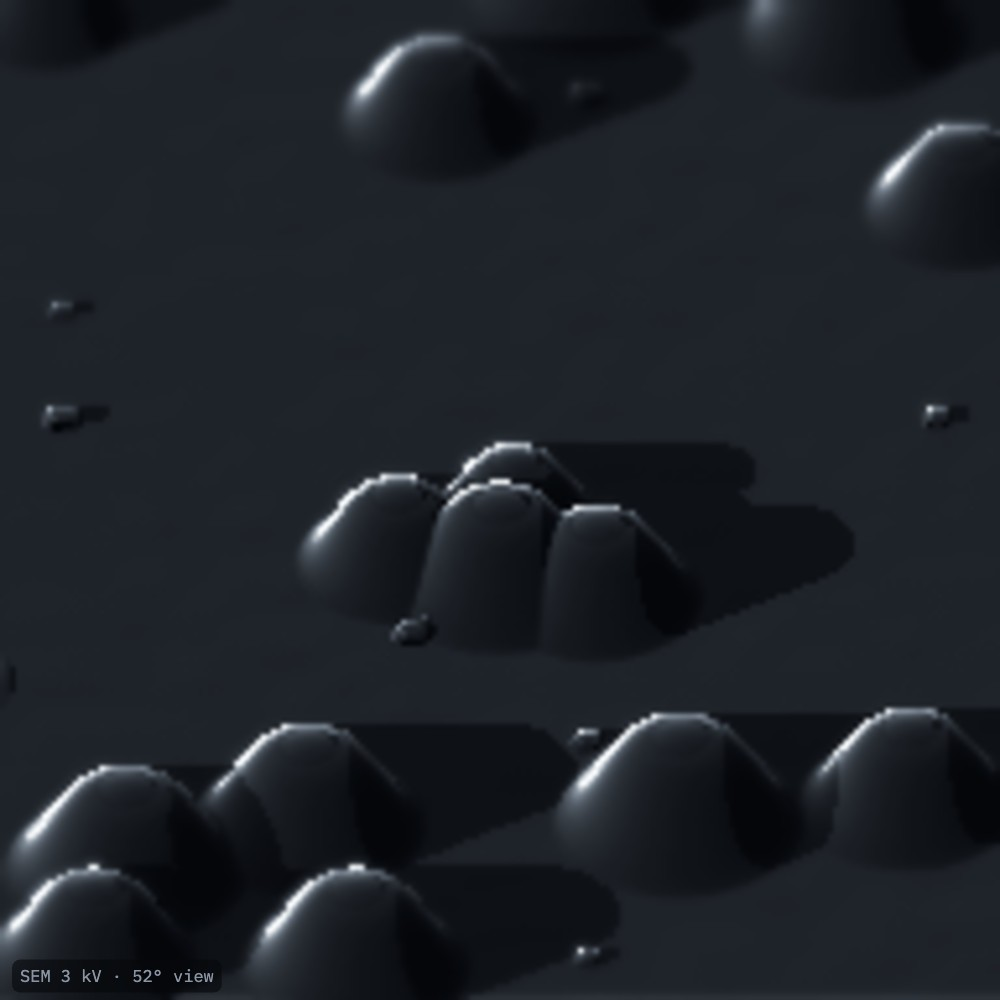
Fig. 3. After sputter coating: no charging.
Sculpting with Ions · FIB-view4
SOP-03 Cryo lamella for cryo-ETSteps 4 and 5 of 8
Steps 4 and 5
Milling angle and relief cuts
Tilt the stage so the ion beam skims the grid at the milling angle: 8–20°. With the 45° pre-tilted shuttle, angle = stage tilt − 7°: 12° at a stage tilt of 19°. In FIB-view set Milling angle, then Run next step.
Re-check the eucentric height at this tilt.
Mill two narrow slits (micro-expansion joints) through the film a few micrometres either side of the site. In FIB-view keep Micro-expansion joints on and Run next step.
Table 2. Milling angle and lamella length (5.2 µm clump)
Milling angle
Stage tilt
Lamella length
8°
15°
37 µm
10°
17°
30 µm
12°
19°
25 µm
15°
22°
20 µm
20°
27°
15 µm
Trade-off. A shallow angle gives a longer lamella (more cell to image) that needs less tilt compensation in the TEM, but the beam crosses more ice and grid bars may shadow it. Steep angles are quicker but short.
Why relief cuts. The frozen film on the grid is under stress. Without the joints, lamellae below ~300 nm bow and can break (Fig. 15).
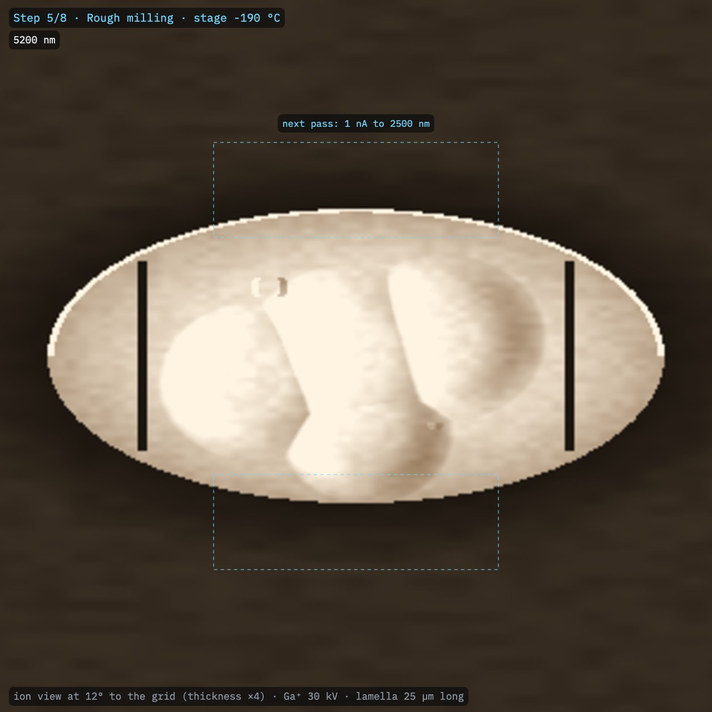
Fig. 4. Ion view at 12°: the clump is foreshortened into a long mound. The Pt layer lines its front edge; the two dark slits either side are the micro-expansion joints.
Sculpting with Ions · FIB-view5
SOP-03 Cryo lamella for cryo-ETStep 6 of 8
Step 6
Rough milling
Place two rectangles, one above and one below the lamella line, 12 µm wide. Leave the lamella thickness between them.
Mill both at 0.5–1 nA (Ga⁺; 800 pA on this aperture strip) down to ~2.5 µm. In FIB-view: choose the current and the target, then Mill both boxes (or press U).
Check the SEM view from above (Fig. 6): two dark trenches either side of the slab.
Table 3. The recipe (Ga⁺ 30 kV) and its true result
Current
Target
Reached
Damage per face
Time
800 pA
2.5 µm
2499 nm
42 nm
9.5 min
300 pA
800 nm
801 nm
42 nm
15.4 min
100 pA
400 nm
403 nm
41–43 nm
11.0 min
25 pA
200 nm
200 nm
42 nm
21.7 min
Note. The ice crystallised in none of these passes: each current stays below about half the thickness in nanometres (in pA). Rushing breaks that rule (Fig. 14).
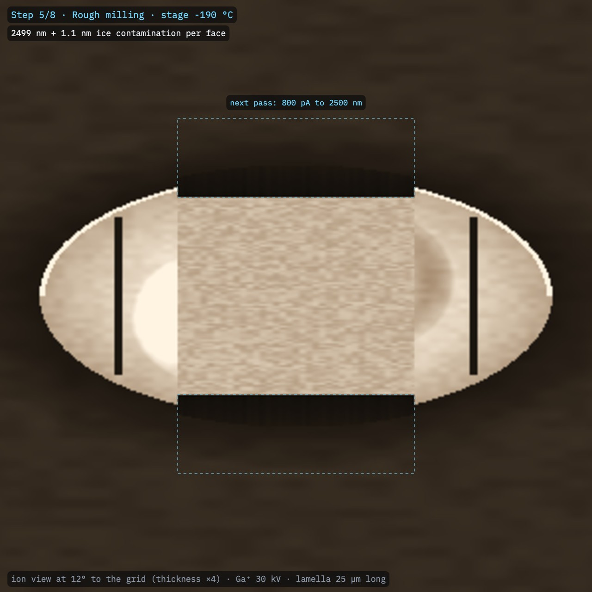
Fig. 5. Ion view after rough milling: the slab (thickness drawn ×4) between the two trenches.
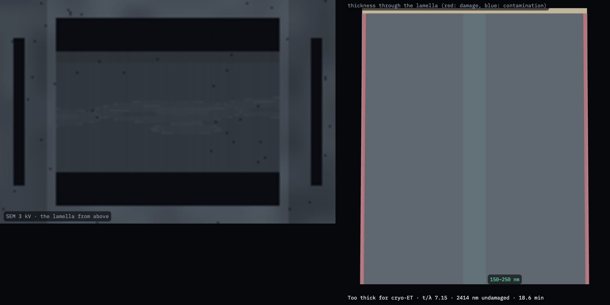
Fig. 6. SEM at 3 kV from above (left) and the true thickness through the lamella (right).
Sculpting with Ions · FIB-view6
SOP-03 Cryo lamella for cryo-ETStep 7 of 8
Step 7
Fine milling and polishing
At 300 pA mill both boxes to 800 nm, then at 100 pA to 400 nm. Keep the boxes' inner edges at the target: the beam's tails must not reach the slab.
Polish at 10–50 pA to ~200 nm (150–250 nm), alternating faces. Do this last, for all lamellae on the grid, just before unloading.
Judge the thickness from the SEM at 2–3 kV from above (Figs. 7–9): as the slab gets thinner than the electrons' range it brightens. In FIB-view the analysis cryo_quality estimates it from that contrast.
What the damage means. Each 30 kV gallium face keeps ~42 nm of damaged, Ga-implanted material. In a 200 nm lamella that leaves ~115 nm undamaged in the middle. Plasma ions leave thinner layers (Table 4).
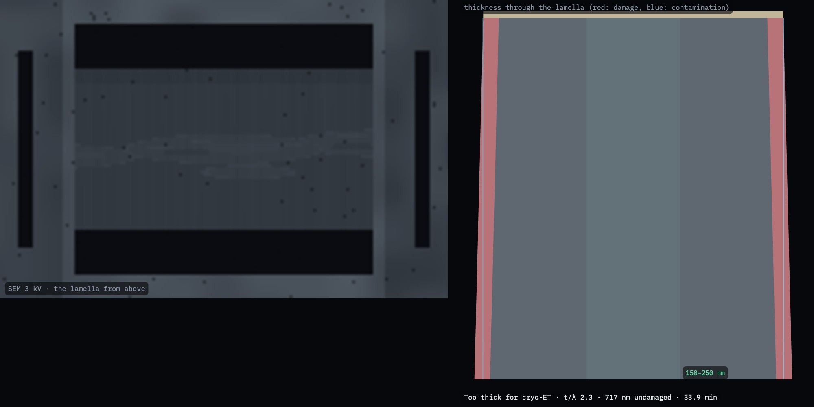
Fig. 7. 800 nm: the slab is still dark at 3 kV.
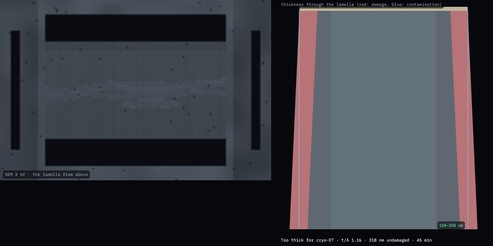
Fig. 8. 400 nm: it starts to brighten; the cells it cuts through show.
Sputter coat once more (~15 s): a few nm of Pt keep the lamella from charging during the tilt series in the TEM. In FIB-view: Final sputter coat.
Unload promptly to the transfer station and store the grid under liquid nitrogen.
Result. In this run: 200 nm thick (214 nm with coating and 2.6 nm of contamination per face), t/λ 0.61, 115 nm undamaged, 0 % crystalline ice, 68 min of instrument time: ready for cryo-ET.
Table 4. The same recipe with three ion species
Ion
Damage per face
Undamaged
Time
Ga⁺
42 nm
117 nm
68 min
Ar⁺
31 nm
139 nm
93 min
Xe⁺
18 nm
166 nm
50 min
Table 5. Damage per face (nm) vs ion voltage
Ion
30 kV
16 kV
8 kV
5 kV
Ga⁺
42
27
17
13
Ar⁺
31
18
11
7.5
Xe⁺
18
13
9
7.1
From FIB-view's collision cascades in vitreous cytoplasm (Ga⁺ 30 keV reaches ~52 nm in ice), with gallium's implantation weighted in. Published cryo-ET studies find similar ordering: plasma ions leave thinner damaged layers than gallium.
Fig. 10. The finished, coated lamella and its true profile.
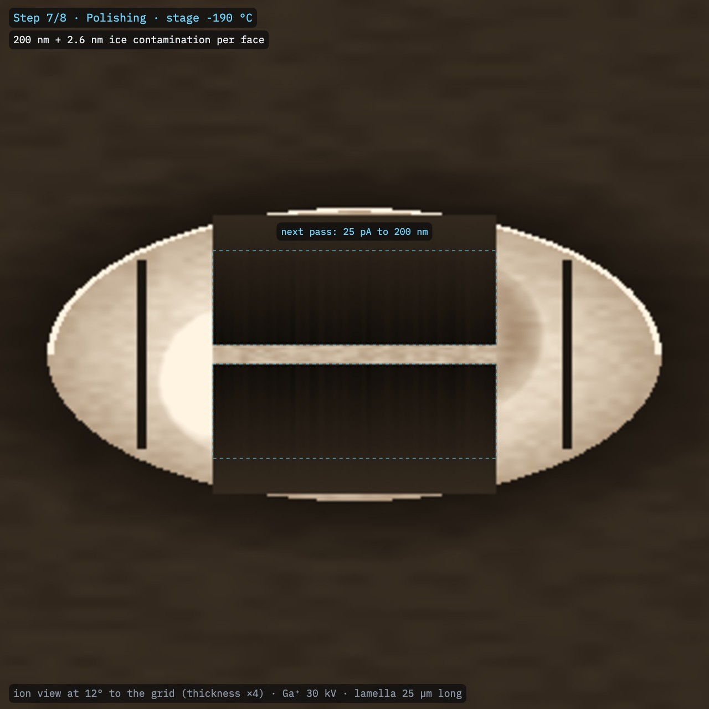
Fig. 11. Ion view of the 200 nm lamella between its trenches.
Sculpting with Ions · FIB-view8
SOP-03 Cryo lamella for cryo-ETTroubleshooting
When it goes wrong
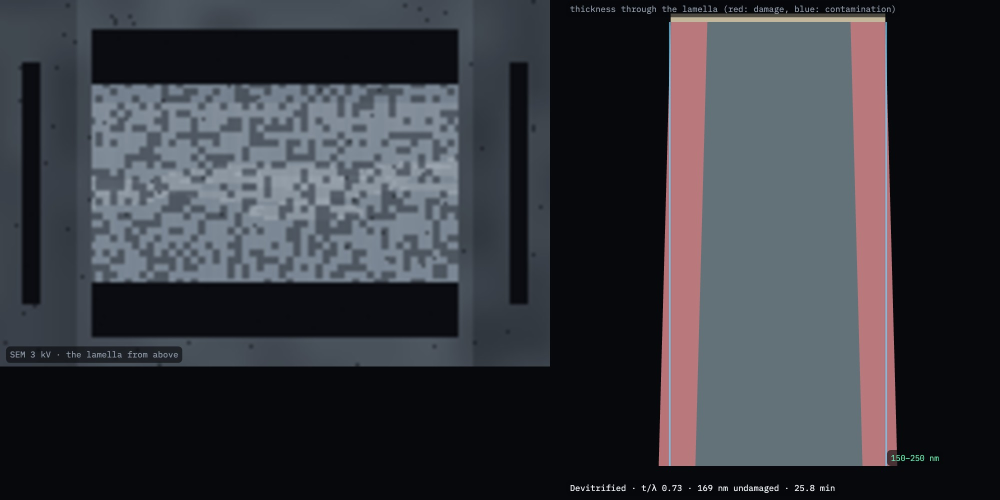
Fig. 12. 800 pA straight to 250 nm: 64 % of the ice crystallised (bright specks).
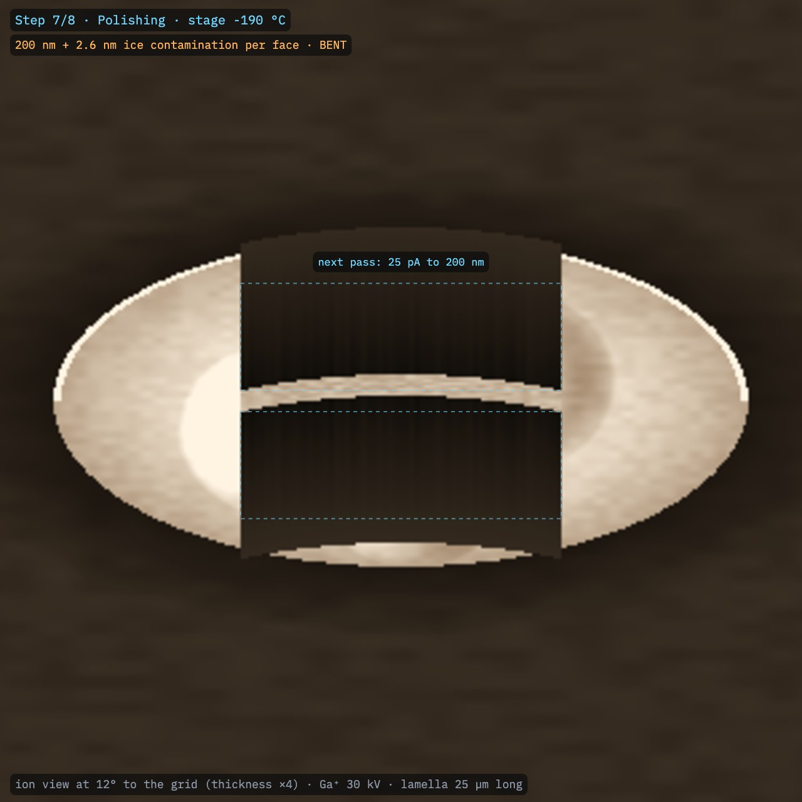
Fig. 13. No relief cuts: the 200 nm lamella bowed.
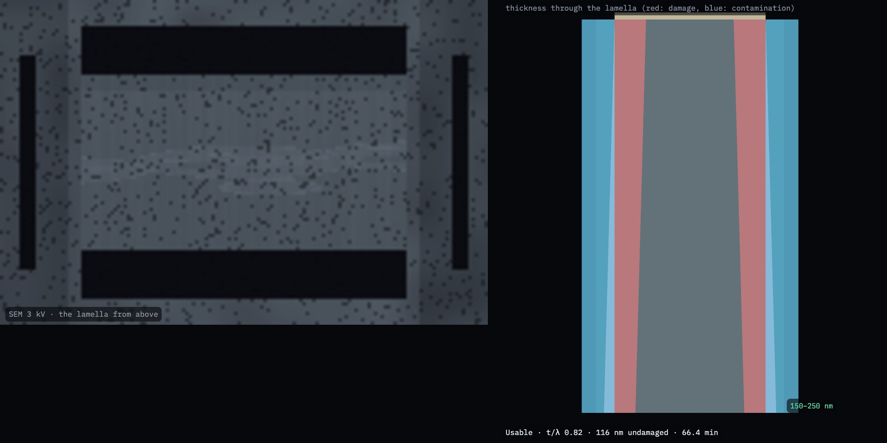
Fig. 14. No anticontaminator and 15 min of waiting: 44 nm of ice on each face.
What you see
Likely cause
What to do
Drift, dark bands, streaks in the SEM
Uncoated ice charging
Sputter coat; image at 2–3 kV, low current
Bright specks; Bragg spots in the TEM
Devitrified: stage above −137 °C, or too much current for the thickness
Keep the stage below −170 °C; current ≤ ½ thickness (pA per nm)
Curtains; rounded front edge
GIS layer too thin or used up
Longer GIS (20–30 s) on a cold stage; fewer high-current passes
Lamella bows, cracks or breaks off
No relief cuts; high current when thin
Micro-expansion joints; step the current down
Lamella thicker in the TEM than when milled
Contamination after polishing
Anticontaminator in; polish last; coat and unload promptly
Thick at the back (wedge)
The beam's taper
Short final passes on each face at low current
Little undamaged volume
Gallium at 30 kV on a thin lamella
Stop at 200 nm, not 100; use a xenon or argon plasma FIB
Sculpting with Ions · FIB-view9
SOP-03 Cryo lamella for cryo-ETBeyond the lamella
Thick samples: cryo slice & view
Plunge freezing vitrifies only a few micrometres. Tissue and dense cell pastes are high-pressure frozen (at 2100 bar, up to ~200 µm thick) and either lifted out at cryo temperature or imaged volume by volume with cryo slice & view.
Load HPF yeast and open Slice & View (key 0). The stage stays at −190 °C.
Image each face with SE at ~2 kV, not BSE: frozen-hydrated material has almost no atomic-number contrast, but secondary electrons separate ice, cytoplasm and lipid.
Slices of 20–50 nm resolve membranes; 100 nm is enough for whole-cell morphology.
Artefacts. Curtains are strong where cells and ice mill at different rates (Fig. 15): a GIS layer and a flat, trimmed surface reduce them. In this run the segmentation found 67 % ice (true 67 %) but overcounted lipid and nuclei (7 % vs 3 %), because bright cell walls are classed with them.
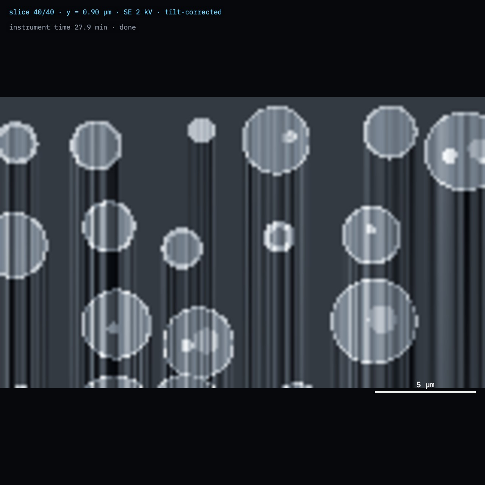
Fig. 15. Cryo slice & view of high-pressure-frozen yeast (SE, 2 kV): cell walls, nuclei and vacuoles in vitreous ice, with curtains below the cells.
Sculpting with Ions · FIB-view10
SOP-03 Cryo lamella for cryo-ETChecklist
Checklist
Check
Value
Initials
Stage and anticontaminator cold before loading; grid never in humid air
Site chosen: cells, thin ice around, away from bars and frost
Eucentric height set
Sputter coated; no charging at 3 kV
Cold GIS layer deposited with the beams off
Milling angle and stage tilt recorded; eucentric height re-checked
Micro-expansion joints milled
Current stepped down: ≤ ½ thickness (pA per nm) at every pass
Polished to 150–250 nm, last, for all lamellae on the grid
Final sputter coat; grid unloaded promptly, stored under LN₂
Stage temperature log: never above −170 °C
Practise in FIB-view
Cryo lamella mode runs the preparation steps for you and leaves the milling passes to you. The training task Cryo lamella: 200 nm for cryo-ET hides the true thickness: you judge it from the SEM view from above, rate your result, and then see the truth, including the ice that crystallised and the contamination that grew. The experiment Gallium vs argon in ice shows the collision cascades behind Table 5. In Python, fib.cryo(...) runs the same workflow (example cryo_lamella.py).
Sculpting with Ions · FIB-view11
Try it
The link opens FIB-view with the training task Cryo lamella: 200 nm for cryo-ET.
FIB-view · Cryo lamella training task
Works on a computer or a tablet.
The exhibit
github.com/Advanced-EM/FIB-view
Related procedures
SOP-01 TEM lamella lift-out (materials science); SOP-02 Python scripting: automate the milling passes.
Cryo-ET
Seeing with Electrons (TEM-view) shows what happens to the lamella in the transmission microscope.
SOP-03 Cryo lamella for cryo-ET, version 1.0, October 2026 Simulation only. Nothing here controls a real instrument. Follow your facility's procedures and the manufacturer's documentation.